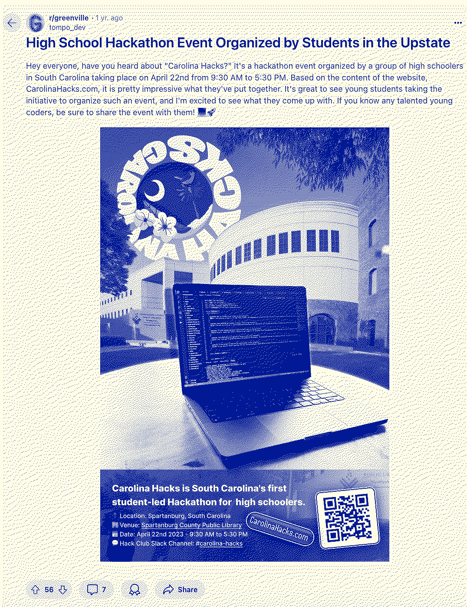

Journeys @
(2023-2024)
Home / South-Carolina's-First-HS-Hackathon
After Epoch, I knew I needed to organize a hackathon in my state (South Carolina). There had never been a hackathon for high schoolers in SC. I worked with my friends (Dieter, Parker, and Tyler) to organize Carolina Hacks. By far the hardest part was finding a venue. We really wanted it to be a 24-48 hour event. Unfortunately the school would not let us invite students from other schools, so we started looking into other venues.
We reached out to a startup incubator that seemed really interested, but then when it came down to making it official and scheduling the dates, they kept delaying us and asking us to go collect survey results to prove interest in the event.
I talked with Sam about this over Slack, and his suggestion was to give up on the startup incubator because he believed they would never say yes & to start looking for other venues who would accept us.
One day, Dieter & I approached the people who run the "teen room" at the Spartanburg County Library. To our great surprise they were super onboard. The only caveat is they could only do it during the hours they were open (so it was more of a day-only hackathon).
We started making a bunch of posters to promo the event. We also made some instagram posts. The most effective two methods were
- Astroturfing on Reddit (nearby city reddits & college reddits)
 - Sharing on my mom's facebook & Dieter's mom's facebook (parents saw & would invite their kids)
Here's a link to the website: Carolina Hacks
Here's a link to the documentary: Documentary
We did it using the hackathon grant and a couple donations from people in the community who I did not know (they just found the donation link at the bottom of the website and to my SHOCK a couple people donated $100 each).
TYSM to all of my friends & for Hack Club making this event possible.
Hopefully someone from South Carolina organizes another hackathon in SC. :)